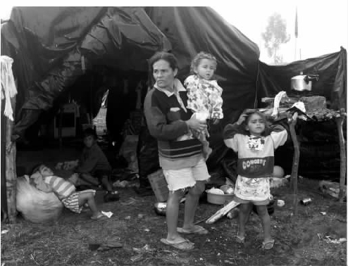
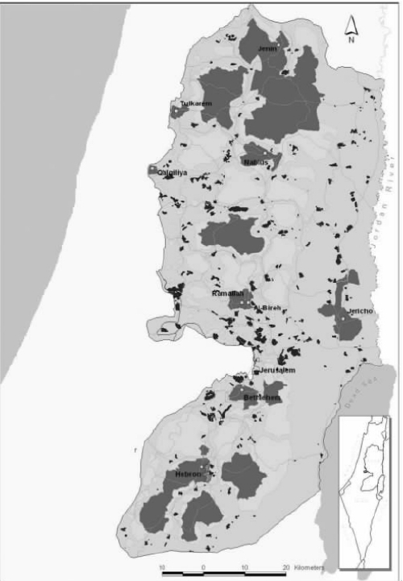

据《牛津英语词典》记载，“无地状态”这个词在英语中只被写过一次，1851年赫尔曼·麦尔维尔曾写道：“在无地状态中存有最高真理。”因此，这种情况似乎不单单是盎格鲁-撒克逊人的问题。无地状态是许多其他社会，包括一些居住在盎格鲁-撒克逊国家的普通百姓每天不得不面对的最直接和最重要的问题。在许多先前被殖民过的国家，殖民者把居住在某一土地上的人们赶出家园，建立起了大农场和自己的住房。其中一些被掠夺了土地的人们的子孙，时至今日还处在手无寸土、贫穷无助、居无定所的状态之中。因为没有用以耕作的土地，这些穷人唯一的选择是流浪到大城市的贫民窟度日。然而，平民窟的救济所也是岌岌可危，比如种族隔离时期的南非或者是与其同时期的孟买。
以巴西为例可以更清楚地揭示这一点。巴西的国民生产总值列世界第九位，但巴西同时也是世界上收入分配最不平均的国家。该国百分之三的人口控制着可耕地面积的三分之二，其中百分之六十的土地却处于闲置状态。在极端困乏的条件下生活的人们，特别是在巴西最贫穷的地区累西腓州生活的人们发动过许多反抗活动，发起组建了农民联盟，开展了革命运动和游击运动。就在不久前，那里的人们作出了一个与众不同的政治回应，他们成立了一个新的组织——无地农民运动。针对大片土地被极少数人占有的状况，无地农民运动不仅反对这种失衡的状况，而且打出了“占领失地、积极抵抗、扩大生产”的口号，用以鼓舞巴西一千二百万无地劳工占领未被耕作的土地。无地农民运动是世界上最大的基层群众组织之一，如今在无地农民运动的领导下，已有超过二十五万个家庭赢得了一千五百多万英亩土地的所有权。成千上万个家庭在等待着政府认可他们的定居权。在此过程中，在农民、地主和警察之间，冲突还频有发生。
无地农民运动的一贯工作原则是集体性和社团性。该组织从一开始就在其定居地建立了食物合作组织和小学，并进行了扫盲教育。所有的农场在运作时都考虑到环境保护问题：无地农民运动生产的有机种子在拉丁美洲是独一的。该组织也注重保健问题，它还从整体角度考虑，认为健康问题不仅仅是一个就医的问题，还涉及生存环境、卫生清洁和全民福利。这一有关健康的概念包括个人生存的社会环境。无地农民运动是这样说的：
值得注意的是，这不仅仅是后殖民所乐于分享的一个关于健康的政治问题，而且它也是无地农民运动发展社区大众生活整体规划的远景目标的一部分。

图9 玛丽亚·达·席尔瓦和自己八个孩子中的四个孩子在一起，她和她的丈夫瓦尔德马住在由安赫毕的无地农民运动建成的寮屋里，该处地处离圣保罗一百三十英里的新卡努杜斯，巴西，1999年7月30日。
1997年，在试图通过传统政治渠道重新获得政治主动权和土地改革控制权的一次尝试中，巴西政府在世界银行提供的一亿五千万美元的特别支持下，启动了一项以市场为基础的土地改革替代方案，即《土地规划方案》，以此来挑战无地农民运动。方案计划高息贷款给无地的人们以便他们用来购买土地，该方案由站在地主一边的区域委员会进行管理。因为世界银行站在地主一边干涉一个国家的内政，所以该方案受到了广泛的批评。不过无地农民运动在反对该方案的过程中变得越来越强大。世界银行干预巴西政治产生了始料不及的结果：路易斯·伊纳西奥·达席尔瓦，这位被民众亲切地称为卢拉的人于2002年11月当选巴西总统。卢拉出生于累西腓州的一个赤贫家庭，小学未毕业就辍学了，可他后来成长为一个工会的领导以及劳工党的创立者。他在当选致辞中清楚地表达了他在施政时要优先解决的问题：
从许多方面来看，无地农民运动都可算作后殖民政治活动的典范：组织一场基层群众运动来反对一个由地方强权和国际权力机构——银行、商业、投资基金所支持的不公正的体系，反对物质的不平等占有。这些国际权力机构妄图使全球的经济市场保持现状。无地农民运动建立在集体基础之上，代表普通人的福利，而且如我们所看到的那样，它关注土地占用和更广阔的社会问题层面，其中包括了妇女地位问题、儿童福利问题、保健问题、教育问题以及提高生存环境质量问题。这样，无地农民运动就必须从地方做起，不仅要面对地主和地方政府、中央政府中的反对者，而且要直接面对世界银行中的反对者，这就意味着它必须从一个更广阔的角度来考虑问题，在一个更大的平台上和更广阔的公共空间里为自己的主张而战斗。正因为如此，和无地农民运动一样的其他各种运动都要与其他国家中与自己的情况相当的运动组织联系起来，比如菲律宾农会——一个由无地农民、小农场主、农业工人、勉强糊口的渔业工人、农村妇女和农村青年所组成的全国性的联盟，同时还要联系更大规模的全球性社会运动，如全球人民行动组织——一个广泛的抵抗运动联盟，它反对世界贸易组织强加的不平等。全球人民行动组织发起了全球人民行动日，旨在对抗全球资本主义和“市场中的独裁”，它先后在世界贸易组织、八国集团、世界银行开会期间，在日内瓦、西雅图、布拉格组织活动，十分成功地绕过了那些传统渠道，而以往只有本国政府的代表才能代表人民说话。既然第三世界国家的政府面对八国集团的利益显得软弱无力，那么全球人民行动组织则直接领导大众行动，产生了相当大的影响。
无地农民运动还与部族运动相结合。土著居民，如巴西的瓜拉尼人、马库希人和希库鲁人正在努力夺回被大农场主和金矿矿主抢走的土地所有权。无地状态对于全球数以百万计的人们来说仍然是政治上的核心问题，长期以来它就是政治反抗和农民暴动的焦点。当前墨西哥的萨帕塔运动秉承1910年萨帕塔农民革命的遗志，继续反对那些掠夺了他们的土地的大地主和大牧场主。1913年的《南非土著居民土地法》规定，除了农业工人，其他非洲人不得拥有或占用“计划的土著区域”以外的土地。该法案导致了许多人无家可归，失去了谋生手段。在印度，农民或部族为获得土地发动运动和起义，其反抗地主控制土地的管辖制的行动就从来没有间断过，从殖民地时期到独立时期，从甘地领导的印度农民运动到毛泽东领导的农民武装夺取政权。
既无土地又无财产是殖民地居民的一个典型特征，而且一直是历史上最难解决的难题。1972年澳大利亚的土著居民和托雷斯海峡的岛民在堪培拉国会山的草坪上搭建了他们著名的“帐篷使馆”——一座简陋的棚屋，这很有效地宣传了他们对土地所有权的主张。“原住民的土地权”一直是北美洲的土著居民、印度的土著居民、津巴布韦没有财产的非洲农民主要关注的问题，非洲农民一直在为《阿布贾宣言》中体现的基本的土地权而斗争。要求收回失去的国土是巴勒斯坦的中心问题。
这些就是后殖民斗争，通常都涉及土地占用的后果。土地占用问题是殖民强国最平常但却是最重要的特征之一。所谓的“土地所有权问题”对于西方革命者来说并没有什么大不了，但对于拥有三大洲视角的人（比如毛泽东、法农、格瓦拉、副司令马科斯）来说，却是一个主要的政治主题，这是令人吃惊的。思考无地状态就是思考农民问题，就是思考涉及世界上最贫穷的人的问题。毫无疑问，现实情形是今天我们更多想到的是无地的农民，而不是20世纪60年代的乡村游击队的身影。无论如何，从哥伦比亚到秘鲁，从尼泊尔到印度北部的阿萨姆邦，土地所有权改革的必要性在持续的农民革命运动中始终占据着中心地位。
《第二个哈瓦那宣言》，古巴人民，哈瓦那，古巴，
美洲自由区，1962年2月4日
拉纳吉特·古哈，《不具支配控制力的统治》（1997）
无地状态指的是一个人因为被驱逐而处于无地状态。无地状态意味着土地丧失，失去土地。你与土地的关系决定了你是否处于无地状态。根据17世纪英国哲学家约翰·洛克的观点，欧洲人认为游牧者从来就不拥有土地，这就是为什么殖民者能够宣称对空地的占有权。这就是为什么“原住民的土地权”这一概念具有如此超乎寻常的复杂性。在战争期间，在这一点上就出现了对立，不仅仅是两类人的对立，也是认识论上的对立。正如批评家、法律历史学家艾里克·谢菲茨曾经十分有力地指出的那样，欧洲人带有一种与生俱来的财产观念，一种拥有和占有财产的观念。这种观念与那些不能被同化到这个系统中的观念存在根本对立。游牧者在土地上游牧，与土地关联紧密，但从不把自己与土地的关系变成财产或占有关系。这是一种相当神圣的祖传的关系。
法国哲学家吉尔·德勒兹和费利克斯·加塔里曾经对土地的占用过程以及从先前使用该土地的人——不论使用人是否拥有该土地的所有权——手中没收土地的过程进行了概念化的归纳。他们称之为“辖域化”和“解辖域化”。第三个阶段是“再辖域化”，描绘了殖民主义或帝国主义粗暴地对本土文化所进行的经济、文化和社会转型，同时刻画了通过反殖民运动成功地抵制“解辖域化”的过程。在后殖民国家还产生了其他的抵制形式：与政府进行富于战斗性的谈判，比如无地农民运动，或者甚至是通过简单地赎买而拥有土地，比如在美国中西部正在发生的事情。19世纪的殖民定居者通过国家的土地法而拥有了这些土地，后来部分是因为农业衰退，部分是因为土地本身并不如美国政府所估计的那样富饶，无法进行集约耕作，因而毫无实际价值，最终被抛弃了。
德勒兹和加塔里还从战略的角度对游牧者的概念进行了进一步的界定。他们认为游牧者能最有效地反抗资本主义政府机构的控制。从西班牙到瑞士，欧洲关于吉普赛人或“旅行者”的报告都可以提供生动的例证。在过去的几百年里，各国政府就把这种永远处于流动状态的人群视为严重的威胁，认为需要对其严加干涉，使其稳定下来，才能对其加以控制。
德勒兹和加塔里认为，可以把流浪的意义延伸到包括了所有越过或是消解了当时社会规范边界的文化和政治活动。更直白地说，流浪是一种跨越地区的迁移实践，它单方面地跨越边境，以此来藐视区域统治势力所宣称的控制权。“恐怖主义”现在正迅速地发展成为跨国的网络体系，它是与流浪有关的典型政治活动的一个极端的例子。然而无地状态提醒我们，流浪不能被简单地颂扬为一种反资本主义的策略，理由很简单，流浪也是资本主义自身的一个典型的野蛮特征。资本主义历史上发生的圈地运动，就曾迫使农村土地上的居民向着城市里仅有的工作（如果有的话）涌去。在反殖民和后殖民的历史中，流浪者不单指那些仍然保持着资本主义前期生存方式的人：过去的两个世纪里，流浪是数以百万计的人不得不接受的生存状态。无地状态是全世界众多农民群体共同关心的一个中心问题，世界上有两千万难民，他们在物质层面上手无寸土，它们的政府也处于无地状态——无国、无家、没有土地。
一些西方后现代主义者曾试图把流浪和移民描述为文化身份最具生产价值的形式，与认为身份源自身体对家庭和土地的附属的观点相反，它强调了身份的创造性作用。这对于四海为家的知识分子也许有好处，但对于有两百五十万阿富汗难民（约占世界难民总数的百分之十二）的奎达、贾洛扎和巴基斯坦的其他地方的难民营来说，对于约旦河西岸，对于法国的现已关闭的桑加特难民营来说，这种后现代的“移民”身份又有什么好庆祝的呢？对于那四百六十名以阿富汗人为主的难民来说，这种移民身份又有什么好庆祝的呢？他们被关在挪威的一艘名为“坦帕号”的货船里达八天之久。在澳大利亚政府拒绝他们登岸后，他们又被送到了太平洋上的一个贫瘠的小岛上，这里是世界上最小的共和国瑙鲁。这里有三百米长的棕榈树带和废弃的磷酸盐矿。他们在这里登陆，每人手上抱着一个黑色的塑料垃圾袋，里面装着他们的物品。这有什么好庆祝的吗？澳大利亚政府付给了瑙鲁大约一千五百万澳元，以避免这四百六十名难民入境（人均约三十六万澳元）。
或许他们是幸运的，至少他们没有被关进澳大利亚臭名昭著的伍默拉羁留中心。那里处于沙漠的中部，离最近的城市也有三百英里远，并且白天温度高达四十二摄氏度。2002年1月，被送到那里的数以百计的阿富汗难民举行了绝食抗议，其中有至少七十人缝住了自己的嘴唇，以引起人们对他们的苦境的关注。其他人包括一些孩子试图集体自杀。一个十二岁的女孩告诉调查人员说：
伍默拉羁留中心是由澳大拉西亚惩教管理有限公司经营的，它是设在美国的瓦肯赫监管公司的一个分支机构。
美国追捕阿富汗“基地”组织时乔治·布什的讲话
1840年：巴黎
观众正成群结队地前往法兰西喜剧院观看高乃依的《滑稽的幻想》。这部戏在很大程度上借鉴了莎士比亚的《暴风雨》，它把剧情从加勒比海的一个小岛搬到了法国的某个山洞。高乃依援引了柏拉图的著名意象来说明他的观点：我们所看到的世界上的一切——物质现实——不过是场虚幻，它掩盖或伪装了理念世界。柏拉图为了说明自己的观点，使用了一个比喻——人们站在洞里。人们背对着外部的真实世界站着，他们所认为的真实世界实际上只是真实世界映在洞壁上的不断变化的一些模糊的影子而已。在《滑稽的幻想》中高乃依为了喜剧效果而使用了这个比喻：整个舞台变成了山洞，观众代表真实世界。或者恰恰相反？剧中的主角普里德曼被音乐师阿康德的幻影所蒙蔽，在幻想中普里德曼看到了失踪的儿子变成了富人，一副王子的穿着打扮。然而令普里德曼惊恐的是，在最后一场他看到了儿子被谋杀的场面。在极度绝望中，他又从幻觉中看到儿子似乎又活了过来，与那群谋杀他的人一起分一堆金子。阿康德告诉他实际上他儿子根本不是什么王子，而是个演员，刚才的那些不过是他在戏里的表演。这样，观众愉悦满足地离开了剧院，高乃依高超的舞台技巧展示出一个充满自觉意识的、令人信服的、镜厅一般的假象。可是观众同样也被骗了！富有魔力的舞台美学艺术、富有创造力的想象以及那种能使想象与真实相互转换的能力，使观众在回到他们分布在巴黎各处的安乐窝时，还意犹未尽。在梦里他们还在津津有味地品位他们富于诗意的想象、普洛斯彼罗的虚幻盛典和“一场没有结局的大戏”。
1840年：巴黎南部九百英里处，阿尔及尔南部的乡村
他们排着队在看不清边缘的沙漠小路上缓慢地移动，脚踝被低矮灌木的小尖刺刺得通红，然后又被沙土烫脱了皮。他们爬过陡峭的峡谷，终于找到了洞穴。他们很快走进洞里。黑暗立刻裹住了每个人，洞中的潮气随着他们在冷空气中的呼吸在鼻孔处变成白气。眼睛逐渐适应了黑暗，他们开始在黑暗中看到了闪光和微光。山洞的表面闪烁着微光，熟悉的形状渐渐浮现在他们的眼前。黑暗冰冷的洞穴让人觉得潮湿，但这里没有明显的水源。干渴的喉咙感到阵阵灼烧般的强烈刺痛，所以一些人向洞穴的深处走去，以便得到更多水汽，确实他们可以听到某处微弱的滴水声。其他人焦虑地回到洞口看看外面的地平线，看看下面的大地，看看头顶的天空。什么都没有，只有强风吹来和吹打稀疏灌木的声音在他们的耳边响起。他们又回到洞里，这时他们发现其他人在生火，在找地方睡觉，有人已经睡着了。
他们醒来的时候，天还是黑的。天黑得什么都看不见。他们先闻到了一股烟味，然后空气变得越来越呛人。最年长的老人起来走到洞口。他向前走，但找不到出口。他踏着地上的碎石向上爬去，可是最后头顶碰到了洞顶。洞口被封死了。浓烟像水一样从石头缝里钻了进来，变得越来越浓，越来越呛人。他们的窒息过程是缓慢的，先是眼睛生疼，然后是呼吸困难，肺部疼痛，而大口呼吸的结果是吸入了更多呛人的浓烟。
比戈将军承担着征服阿尔及利亚的任务。法国入侵阿尔及利亚十年以后，局势仍然动荡不定。比戈采用了掳掠、烧毁一切、鞭打和火焚的策略。所有敢抵抗或是被怀疑抵抗的人都被处决了。今天他追逐一个难对付的部落来到了这个山洞。他封死了洞口，然后往里灌烟，要闷死洞里的人。他在日志中写道：
直到20世纪50年代，也就是一个世纪之后，与比戈的时代相比，这里的一切都没有什么变化。在阿尔及利亚独立战争期间，法国人仍然为活埋阿尔及利亚人而欢呼雀跃，这时法国人使用的是推土机。
2002年：阿富汗
这篇来自英国广播公司网页的新闻讲的是在阿富汗的美军遭到了严重的抵抗：
阿富汗的洞穴遭到了高压弹的轰炸
从1840年到现在，洞穴经常是西方对伊斯兰世界的干涉事件的发生之地，那里上演了“一场没有结局的大戏”。活埋、镇压、引起窒息（把男人、女人和孩子们肺里的空气吸干），今天这些已经变成了一个对殖民地本身进行镇压的隐喻——殖民地所需的空气已被吸干。西方世界喜欢把这样的时刻轻描淡写地说成是“殖民遭遇”，如今窒息而死和殖民暴力已经成了回忆和纪念。
就在西方对殖民地进行残酷镇压的同时，西方人还在继续去剧院看戏。他们总说艺术与政治没有关系。以美学来划分世界是摩尼教的观念，或者是殖民色彩和等级意识很强的二元观念，革命心理学家弗朗兹·法农在《全世界受苦的人》（1961）一书的开篇就对这些观念进行了区分。法农说，它们的“美学表达遵从的是现已确立的秩序，在资本主义国家里一大批德育教师、大学教授、顾问和‘迷失方向的人’（即昏头昏脑的人）总是把被剥削的人与掌握权力的人区分开来”。作为知识分子、艺术家、文化的消费者或生产者，你要么与定了型的审美观（这种审美观加强了两种人之间的区分）同流合污，要么与其竞争，比如把剧院变成一个反抗的场所。
下面所有这一切都代表着后殖民批评中的基本思想的转向：认识到维系西方财富和利益的野蛮军事力量与其美学生活相联系；认识到从另一个不同的视角去看待《所罗门宝藏》（1885），洞穴恐怕就不一定会引发人们兴奋的想象，或者从另一个不同的视角去看待《印度之行》（1924）里的马拉巴山洞，就不一定会引发精神和性文化的困惑，就会发现其中到处是窒息和殖民暴力的记忆。迈克尔·翁达杰在《英国病人》（1992）的结尾处描绘了凯瑟琳的死亡过程，她的死从反面表现了这种不和谐：在克比尔高原的欧维纳特山脉的游泳者洞穴里，石壁上刻着根据崇高美学思想画成的古老人像，在这些画像之下，这个英国女人在冰冷的黑暗中裹在降落伞里躺着死去了，这个残酷的欧洲战争的牺牲品在满眼是沙漠的环境中演完了自己人生最后的角色。
爱德华·W.萨义德，《东方主义》（1978）
印度地图上的说明
除了边境以外有没有什么东西真正地构成了国家？有些“国家”没有有形的边境，比如加拿大境内最早的国家（那些北美洲的土著人宁愿选用这个称呼，也不愿意选用“第四世界”这个更常用的术语），再比如“伊斯兰国家”（这个“国家”可以在某种程度上管辖它自己的边境）。边境限制了国家的疆域，在一定的空间内，国家的基础设施、政府、税款征收体系得以运行。国家是一种合作组织，边境的存在使其他国家认可其为一个国家，国家派出外交代表，参与到全球的国家团体中来。这个国家团体是一个没有公共价值观的团体。
地球上的疆土分布就像是一幅由许多国家组成的镶嵌作品。或者说是由许多政权组成的镶嵌作品？是什么使一个政权成为一个国家？政权和国家必须合二为一吗？政权的问题是，是什么使其权威合法化了（拥有天授神权的君主除外）。1789年法国人发现，国家的观念以一种理想的方式履行着这一功能。国家如同一个巨大的公司，国家的公民别无选择地归属于它，就这样，国家变成了一个真空地带，潜在的各种形式的认同都可以填充进来，比如种族、宗教、语言、文化、历史和土地，那么是什么使你成了你的国家的一部分呢？
人们过去常常这样假设，要想成为真正的国家，那么它的人民应该尽可能相似。如果一个国家的人民外表不同、语言不同、宗教不同，那么这种不同将会威胁到这个国家的“想象的共同体”（这一概念最早是由政治理论家本尼迪克特·安德森总结出的）。有许多人，许多种语言，许多种文化为此受到了国家的压制。美国这个移民国家在解决如何使万众归一的问题上作了有趣的尝试。首先，美国的每个人都有一个共同点，那就是，他或他的先人都是作为移民来到此地的，当然令人难堪的是，这并不适用于美洲大陆的土著人，他们为了给新来者腾出地方居住，或者被驱逐或者被灭族。其次，与大多数国家不同，事实上美国与其旧帝国的情况又非常相似，那就是美国大片的陆地是独立存在的，并不与别的大陆相连，而是分布于其他国家和大洋之间（这可能就是为什么美国人在所谓的世界联赛中使用“世界”这个词来代指美国的原因）。美国与土地、历史、文化缺乏传统联系，这可以解释为什么美国要从其自由政权的意识形态（民主、自由、自由经营的资本主义）中衍生出一个使其与众不同的身份，为什么美国不得不创造出一些被妖魔化的、据说对其生存构成威胁的敌人（这些被妖魔化的敌人相继是：巫师、中国移民、共产主义、拒绝说官方语言英语的西班牙裔美国人、说黑人英语的非裔美国人、非洲杀人蜂、伊斯兰教……）。这些敌人让不同的美国人感受到了集体的威胁，并使大家团结一致起来。
美国的这些共同的价值观都从在美国各地飘扬的美国国旗上体现出来了。美国国旗随处可见，任何可以想到、可能的甚至不可能的地方都插有美国国旗，例如门前的草坪、车窗、建筑物的侧面、公司网站。美国的意识形态表现为共同的生活方式，这些生活方式使美国凝聚在一起成为一个国家。垄断资本主义的扩散使大多数美国的城市极为相似。美国不仅有遍及世界各地的麦当劳，还有沃尓玛、JC Penney百货零售公司、维益公司、Chick-fil-A快餐连锁店、邓肯甜甜圈、IHOP烤饼连锁店、Friendly's餐饮公司、史泰博办公用品公司、Office Max办公用品公司等。在美国，无论你走在哪条路上你都能知道你在哪儿。正是因为美国人的生活是如此一致，所以从20世纪60年代开始美国社会开始容忍少数族裔的人们宣扬身份的不同，但这种容忍有一定的限度，这样一来任何居于美国的人都不得不被吸纳进来直至最后变得与“美国人”一致。然而，在美国有一种不同是显而易见的，那就是经济上的不同：美国有许多富人，也有许多穷人，事实上有许许多多的穷人。坚持不同的文化掩盖了一些裂痕，但是也成功地使人们对贫富差距习以为常。
是的，这种国民身份的同质化在美国很成功。它确实允许了某些种类的差异存在。后殖民政权的错误在于，它选择了德国浪漫主义时期提出并被德国纳粹政权所采用的国家理论，并把这一理论作为建国的唯一方式：国家由语言、历史、文化和种族相同的民族构成。虽然此种模式有利于巩固政权，也有利于在反殖民运动中实现共同的目标，但是在独立之后，用国家监督的手段稳定和强制推行这种模式，在总体上会导致灾难性的后果。民族主义具有两面性：独立前是好的，独立后则变坏了。这种矛盾则意味着后殖民主义本身可能被当代各种各样的文化民族主义挪用，尽管这与其理论初衷相悖。
印度的印度教复兴运动以重回古印度文明黄金时代的思想为指导，坚持对希望独立的少数民族地区拥有不可剥夺的主权（显然包括印控克什米尔地区，还包括印度整个东北边界的那些“限制区域”，这些区域不被列入给外国人发放的旅游签证的范围之内）。印度教复兴运动是新近的民族运动，它要实现的是源自19世纪德国的民族单一化理念的民族同质化幻想。如果你对这种关联有疑问，那就问一问为什么新近印刷出来的希特勒的《我的奋斗》能在印度北方和马哈拉施特拉邦的大街上到处售卖。同质化的目标就是要实现印度化，就是要建立一个印度教国家，一个纯粹的印度教国家，而这样的纯印度教国家将会把少数族裔人口，比如穆斯林或基督徒消灭或者排除在外，并且同时把达利特人（贱民）和原住民（部落）永久归于其种姓等级制度之内。印度教复兴运动想学邻国斯里兰卡，并仍然紧抓着内战后冷酷的同质化不放手，但是，在实践上，这个排他性的运动——“只有僧伽罗语”运动最初是在1956年S.W.R.D.班达拉奈克在全民普选胜利之后被用来对付泰米尔人的。西方人总是想当然地认为，西方的民主体系一定是适用于世界上任何国家的最好的政治体系。然而，在许多国家有着截然不同的民族，在这样的国家里个人湮没于占绝大多数的人群之中，民主会变成一种被大众以民主方式认可的暴政与压迫。在这样的国家，少数人没有合法的政治渠道去反对多数人的暴政。你自己数数看有哪些国家。
然而，这些压制性的民族主义计划并不必然产生于内部。正如本尼迪克特·安德森所指出的那样，民族主义通常是由那些离开了国家的人所创造的。这些人过着安逸、富足的流亡生活，热衷于在一个遥远的未来重建那种被他们理想化的过去的辉煌。这难道不是边境之外的流散民族在建立一个国家吗？思乡怀旧的文化思想是全球化影响的结果，它使得那些远离故土但又从来不接触国家日常生活现实的人产生了这种思乡怀旧的文化想象。据一份2002年发表的广泛引证的报告统计，印度教复兴运动在印度的燎原之势与印度过去几十年中大多数的教派暴力行为有关，而其资金大量来自一个位于马里兰州的美国慈善机构——印度发展救济基金会，尽管美国法律禁止这样的慈善机构参与政治活动。就这样，这些来自美国的、没有住在印度的印度人花钱使过去理想化的辉煌与现存的印度政府以及非政府组织的暴力产生了联系。单一民族观必将带来种族主义和褊狭，使得后殖民时期的知识分子，特别是来自印度的知识分子对国家有着不同的想法。他们支持另一种对国家的解释，主张国家不是发端于它理想化的过去，而是发端于它的现状，他们关注的是国家作为一种压迫力量是如何行使其权力的。这意味着他们需要从碎片的角度对后殖民或后帝国主义国家进行思考。所谓碎片就是指那些不能被轻易地归入某一国家的人或部分，他们存在于社会的边缘和外围。他们又构成了国家理解自身的一个渠道。
国家常常被理想化成一个女性的形象，民族主义的意识形态常常赋予民族核心以理想的、男性眼中的理想化的女性形象。但当这样的事情发生时，女性，如弗吉尼亚·伍尔夫笔下的女性却没有了国家。女性、难民、寻求避难者……整个20世纪女性通过建立跨国组织，一直在为反对父权民族主义而奋斗。1917年推翻俄国沙皇的起义就是以国际妇女节的示威为开端的。支持女性参政的著名人士希尔维亚·潘克赫斯特成了1920年在莫斯科召开的第一届国际劳动妇女大会的代表中的一员。如果说20世纪上半叶的许多国际妇女运动和工会运动是在苏维埃共产国际的框架内组织起来的，那么之后几十年里妇女运动的壮大则是由联合国妇女十年领导的（1975年到1985年）。许多跨国妇女运动都是那时在联合国的框架内发展起来的，其中以国际妇女同盟最为著名。许多其他妇女组织也独立发展了起来，比如新时期妇女发展选择（在拉丁美洲、加勒比海、亚洲等地设有分支机构），还有生活在各种伊斯兰教律法下的女性国际团结网络委员会，还有地中海妇女联合会（其成员主要来自非洲北部和地中海东部地区）。跨国运动与抵抗运动的跨国联合在整个20世纪都是应对父权民族帝国主义最有效的方式。
抵抗殖民压迫或国家压迫的最好方式就是突破边界的限制，向外扩展。
一些国家试图把自己的一些碎片清除出去，而另外一些国家却是由碎片组成的，比如印度尼西亚就是由荷兰人、日本人和爪哇人从不易控制的多样性中建立的，这种多样性现在仍不时威胁到国家的完整。有的国家每天都在生死边缘徘徊，比如巴勒斯坦就是这样。《奥斯陆协议》签订之后巴勒斯坦的地图就像一个多云夜晚的天空。如同分散的星星之间存有大片空隙一样，数以千计的印尼岛屿之间是空旷的大海，巴勒斯坦地图上的星星之间是军事检查站和由以色列控制的地区。
这些由零星的土地组成的控制区严格地讲能说是国家、政权和祖国么？这幅地图使人回想起早期的殖民政权：南非种族隔离时期的班图斯坦，那块小小的黑人居住地就是他们所谓的独立的“黑人家园”。
多数国家依赖封闭的边境。如果边境处于开放的、可渗透的状态，那么这个国家的人就不容易被控制。他们可以离开，别人也可以非法进入：向外的移民、向内的移民和不受欢迎的入境。现代政权的功能具有矛盾性：一方面对边界实行严格控制，另一方面又宽容甚至暗地里鼓励劳工非法移民——这些劳工是没有权利可言的。

图10 “巴勒斯坦的班图斯坦”：《奥斯陆协议》签订之后的约旦河西岸地图。
因此，人们总是划出边界，建起高墙。结果是我们总是被墙所包围。人们住在墙内，墙上有门，人们由门口进进出出，通过窗户向内外张望，打开窗户呼吸新鲜空气，感受夏日的和风。
一些人被拘禁在墙内。军营、监狱的大墙限制了他们的自由。美国称之为“生活在门里面”，南非称之为屏障。
一些人被关在墙的外面。有许多墙的地方就没有了家。有些墙是没有窗户的。这些墙从乡村延伸到城市或曲曲折折地穿过城市，成为阻止人和物出去的阻碍。这是自由主义的界限，为了保卫政权而建。
世上有虚拟的纪念墙，比如越南老兵纪念墙，上面就有士兵的“自由之脸”。点击索引中的一幅照片就会看到这个人完整的纪念网页。看着他们那一张张灿烂的笑脸，读着他们的家庭信息，就会感觉到他们自以为在保卫国家时，付出了沉痛的代价。筑建樊篱古已有之。中国人修建长城抵御北方游牧民族。罗马人修建哈德良长城抵御皮克特人。为加强《英国盐税法》在印度的实施，从旁遮普邦的莱阿到马哈拉施特拉邦边境的布尔汉普尔南部建起了一堵大墙，这堵大墙最终在1930被甘地领导的“食盐长征”运动彻底地破坏掉了。澳大利亚人修起了遍布乡村的防兔栅栏，既为了防止野兔迁移，也为了防止偷来的澳洲土著人的孩子潜逃回家。柏林墙在非正常的情况下把柏林这座城市分为两半，把人们挡在了墙的两边。现在正在约旦河西岸修建的墙和栅栏横穿过巴勒斯坦的农场，把以色列的非法定居者与怀有敌意的巴勒斯坦人隔离开。
边境城市都面临着巨大的移民偷渡压力，特别是处于第一世界和第三世界的直接接触点上的城市，比如西班牙在非洲大陆北部的两块殖民地休达和梅利利亚。就像加勒比海的马提尼克一样，它们是欧盟的一部分，这两个城市利用布鲁塞尔提供的资金，建起了高十英尺的栅栏，配有带刺的铁丝网和电子感应器，顶上还有红外摄像头。但来自摩洛哥、阿尔及利亚，特别是西非的移民仍然试图爬进来。许多是孤身一人的孩子。如果被抓，西班牙当局会把孩子放在滞留中心，而他们在那里经常遭到虐待，然后被非法地遣送回摩洛哥，接着又被摩洛哥警察殴打虐待，最后在深夜被扔到陌生的街道上。许多人不愿冒被卡在铁丝网上的危险，而是宁愿花大价钱冒险乘坐不结实的小船，就是被称为“帕特拉”的小船，在大浪翻滚的大海上航行九英里偷渡到西班牙。没人知道有多少人淹死在了偷渡的路上——也许一年大约有一千到两千人。来自欧盟的压力迫使西班牙政府现在不得不花一亿两千万美元安装一套雷达系统，这就等于在直布罗陀海峡建起了一堵电子墙。这样移民又不得不选取更危险、更漫长的路线来跨越这一水域。
墨西哥的蒂华纳市依靠其边境城镇的优势，实现了相对的繁荣。革命大道长长的道路标线在美国随处可见，可是这里的颜色不同，这就可以告诉人们这里就是蒂华纳市。与加利福尼亚州的清淡柔和相比，这里的色彩绚丽得肆无忌惮。在主要的交通路口，萨拉族人开的红黄色的商店正对着天蓝色的龙虾俱乐部，俱乐部面对着“酒吧、烧烤、跳舞”这几个亮紫色的大字，与药店的粉色和红色相对。在这个边境城市，一个内外颠倒的城市，除了西班牙语，任何语言都可以讲。夜半时分在城市的外围，想要偷渡的年轻人聚集在莱维河的河岸。“守门人行动”成功阻挡了他们向外偷渡，关着的门使得人们像疯了一样奔跑，偷渡者飞快地穿插于5号州际公路的车流中，以躲避边防检查，因为情况太危险，卫兵不会追赶他们。或者他们会游过里奥格兰德河，如果被在得克萨斯州鹰坳巡逻的当地的义务警察逮住，那他们又将在枪口下受到粗暴的对待。这些人实际上只是想溜回到曾经属于他们的土地上，而现在他们被排除在自己的土地之外。边境最繁忙的部分是因皮里尔海滩。
《邪恶的接触》这部电影中有这样的场景：汽车整齐地沿着大街排下去。电影大胆地以一个著名的三分钟长的摄像机跟踪拍摄镜头开篇。镜头移过散落在黑暗中的四块霓虹灯闪耀的区域，移向墨美边境，产生了一气呵成的效果。镜头过渡自然，毫无痕迹，人们之间没有边境——无边境的渗透。一个有钱的美国人旁边坐着位金发碧眼的女伴，他开着一辆大型敞篷车通过边境检查站进入美国。一会儿车爆炸了。